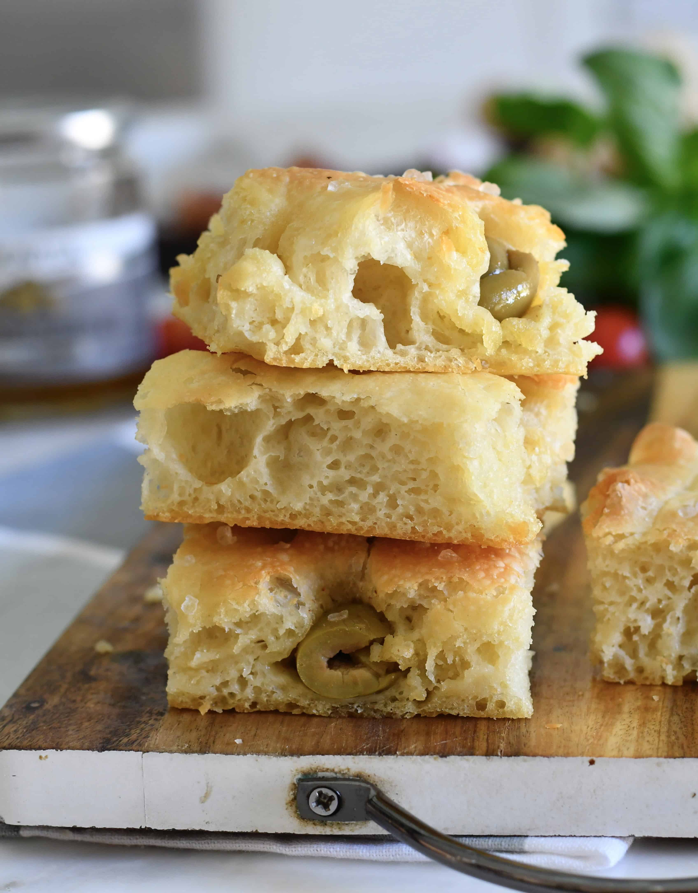

Ohm's no knead Focaccia Recipe

Description
This simple recipe only takes about 3.5 hours to prepare and cook and will be a hit at any party!
Ingredients
- All purpose flour or bread flour - 4 cups
- Warm water - 2 cups (more may be needed to get the right look!)
- Instant yeast - 7tspn minimum
- Sugar - 1 pinch
- Salt - 1 tspn
- Extra Virgin Olive Oil - 1/2 cup (split up between pan and dough)
Steps
- Add the flour and yeast and mix thoroughly.
- Warm up the water to about 90-95F (1-2 minutes on medium-high heat) and add sugar, salt and 1tbspn of olive oil.
- Slowly mix water into the flour until all of the dry flour has been mixed (high moisture dough so it will look very wet).
- Let it rest for 30 minutes, then begin first of FOUR quarter folds, each separated by half an hour of resting.
- After the 4th fold, cover a baking pan with olive oil and put the dough onto the baking pan and let rest for 1 hour.
- Make the dimples into the dough(SO FUN), and bake at 425 for 22 minutes. Let rest for 10 minutes and enjoy!
Home